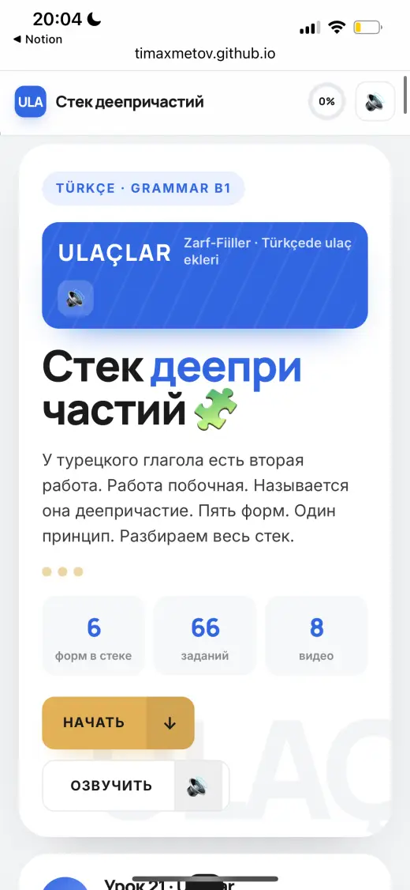
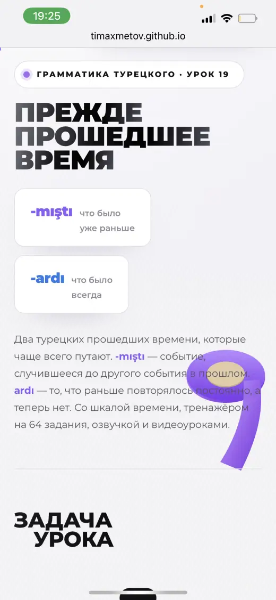
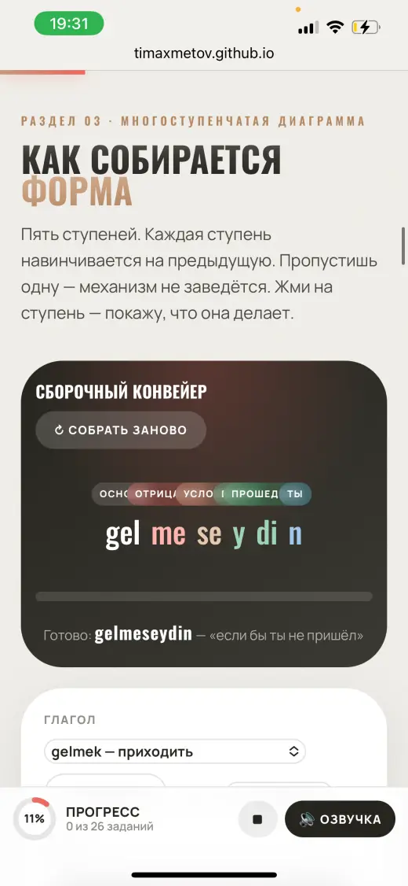
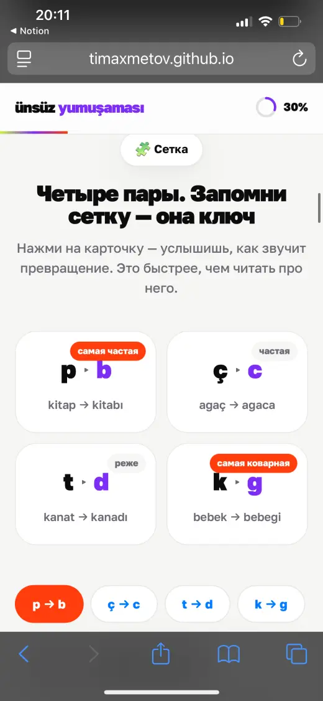
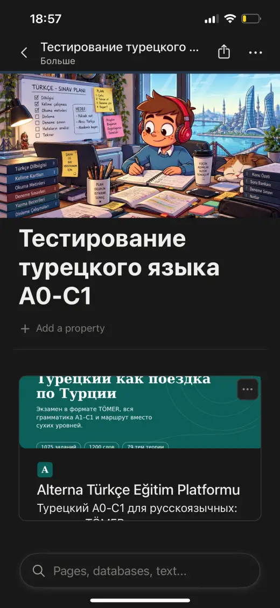

Я переехал в Анталью. В Анталье у меня был сосед. Сосед дал мне книгу. Книгу я потерял.
1 / 5gelenmisafir
гость, который приходит
≡ alternatürkçe · B1
Турецкий · B1 · гайд на 7 минут
Как сказать «который» по-турецки
Я искал в турецком слово «который». Полгода. Не нашёл. Его там нет. Есть три суффикса: -en, -dik, -ecek. Сейчас покажу.
История
Hangi, hangi, hangi
Через неделю сосед спрашивает, где книга. Я хочу сказать: книга, которую ты мне дал. Ищу в голове «который». Нахожу hangi.
2 / 5Говорю, kitap hangi verdin. Сосед говорит, hangi kitap? Говорю, ну hangi verdin. Говорит, hangi? Говорю, HANGİ.
3 / 5Мы стояли в коридоре. Два взрослых человека. И кричали друг другу «какой». Минуты три.
4 / 5Потом сосед понял. Говорит, а, verdiğim kitap. Книга, которую я дал. Одно слово. Без «который». Говорю, да. Она. Говорит, и где она. Говорю, kaybettim.
Книгу я, кстати, так и не нашёл. Зато нашёл -dik
5 / 5hangi — это вопрос «какой?». Не «который». Запомните. Чтобы не кричать в коридоре.
Слова «который» нет. Есть суффикс.+ Add И порядок.-dikendikcek
Порядок слов
Сначала подробности. Потом — кто.
Русский называет человека и потом рассказывает, что он сделал. Турецкий сначала рассказывает. Человек приходит в самом конце. Как гость, который опоздал.
RU → русский порядок
Цвет = та же часть фразы
Главный вопрос
Кто делает?
Одного вопроса хватает. Задаёте его существительному. Оно отвечает. Обычно молча.
-en
Существительное делает само.гость приходит · поезд уходит · девушка читает
-dik
Делает кто-то другой. Сейчас или раньше.книга не читает. Читаю я → okuduğum
-ecek
Делает кто-то другой. Потом.город не поедет. Поеду я → gideceğim
kimyapıyor?+ Add column
| Фраза | Суффикс | По-турецки |
|---|
Три суффикса
Три характера. Как у соседей.
-(y)en•••
-en
Делает сам. Лица не нужны. Он и есть лицо.глагол + an/en, после гласной y.
gelen misafirгость, который приходит
kitap okuyan kızдевушка, которая читает книгу
Türkçe bilen arkadaşдруг, который знает турецкий
uyuyan bebekребёнок, который спит
gelmeyen öğrenciстудент, который не пришёл
-dik + чей•••
-dik
Делает кто-то другой. Этот другой сидит в окончании: -um, -un, -u.dık/dik/duk/dük, после глухих t. Перед гласной k → ğ.
okuduğum kitapкнига, которую я читаю / прочитал
yaşadığın şehirгород, в котором ты живёшь
Ali'nin aldığı arabaмашина, которую купил Али
konuştuğumuz adamчеловек, с которым мы говорили
görmediğim filmфильм, который я не видел
-ecek + чей•••
okuyacağım
-ecek
То же самое, только завтра. Или никогда. Как обычно.(y)acak/(y)ecek + чей. Перед гласной k → ğ.
okuyacağım kitapкнига, которую я прочитаю
gideceğimiz şehirгород, в который мы поедем
yapacağın işработа, которую ты сделаешь
yarın gelecek misafirгость, который придёт завтра. Без «чей»: гость приходит сам
Конструктор
Соберите сами
Выберите глагол, суффикс и кто делает. Турецкий сам поставит y, сам поменяет k на ğ. Вам останется удивиться.
Глагол
Суффикс
Кто делает
Результат
Куда делись предлоги
В котором. С которым. О котором.
В русском у «который» есть предлоги. Турецкий нажал Delete. Остался -dik. Он всё помнит. Просто не говорит.
город, в котором я живуyaşadığım şehir
человек, с которым я говорилkonuştuğum adam
фильм, о котором ты рассказывалbahsettiğin film
день, когда я родилсяdoğduğum gün
Ловушка B1
«У которого»
У соседа была машина. Машина сломалась. Как сказать: человек, у которого сломалась машина? Тут все тянутся к -dik. Зря.
Нажмите вопросы по очереди
arabası bozulan adam
Сломалась машина. Не человек. Машина делает сама — значит, -an.
Ещё два, по той же схеме
babası doktor olan çocukребёнок, у которого отец врач
kedisi kaybolan kızдевушка, у которой потерялась кошка
Правило то же. Кто делает? Отец, кошка. Они и делают. «Чей» вешаем на них самих.
Тест
Шесть вопросов
Сосед проверял меня так же. Только громче.
Шпаргалка
Сделайте скриншот. Я серьёзно.
-en
Делает само. Без лиц.
gelen misafir
a/e · после гласной y · gidEN (git → gid)
-dik
Делает другой. Сейчас или было. + чей.
okuduğum kitap
ı/i/u/ü · d → t после глухих · k → ğ
-ecek
Делает другой. Потом. + чей.
gideceğim şehir
a/e · y после гласной · k → ğ
Порядок: всё про действие — до существительного. Предлоги русского «в котором, с которым» — внутри -dik. «У которого» — снова -en + чей на подлежащем.
Реклама. Честно предупреждаю.
Прочитайте рекламу. На турецком.
👆 Сначала попробуйте сами. Потом нажмите на строку
≡ alternatürkçe · A0 → C1
Четыре строки. Три суффикса. Семь минут назад это был набор букв. Сейчас вы это прочитали. Так работает каждый гайд в Alterna.
Откуда это всё
У меня была папка.В папке были ссылки.Ссылок стало 1716.Я проверил каждую. Руками.Разложил по уровням. От A0 до C1.Папку назвал Alterna.
Папку я, кстати, не закрыл. Она пополняется.
Стена B1
Причастия — это стена.
До неё турецкий простой. Geldim. Gittim. Gördüm. После неё начинаются длинные фразы. Тут многие бросают. Не потому что сложно. Потому что непонятно, что учить дальше.
В Alterna за этой стеной — следующая тема. Она уже разобрана. И следующая тоже.
-dığında
когдаgeldiğimde — когда я пришёл
B1-23-(y)ip -(y)ecek-ini
косвенный вопросgelip gelmeyeceğini sordu — спросил, придёт ли он
B2-09-(y)ken
когда, будучиokurken — пока читал
B1-06-(y)ip
сделав иgelip oturdu — пришёл и сел
A2-25-dığında и косвенный вопрос строятся прямо на -dik и -ecek. Вы их уже знаете. Просто ещё не знакомы.
Запись экрана · без монтажа
Так это выглядит внутри
Гайд по грамматике: разбор, схема, тренажёр, озвучка. Как этот, только про другую тему.
С телефона
В метро тоже открывается








← листайте →
Get sheet done.-dik ✓
Гайдов128
Easy asA0B1C1
Done.✓
+ Лексика131
Sheet.tr
Материалов1716
Better workday.36 гайдов
по работе
по работе
Alterna Timur · A0 → C1
Что там
1128гайдов по грамматике
Разбираю как здесь. Без «откройте страницу 42».
2131блок лексики по темам
Не список слов, а то, что реально говорят.
3109интерактивных ресурсов
Слова, тексты, диалоги, аудирование, игры на запоминание.
432блока по экзаменам
A1, A2, B1, B2, C1 — по каждому отдельно.
536гайдов по работе
Для тех, кто ищет или уже пашет.
61716материалов по уровням
Фильмы, книги, мультики, подкасты, приложения, ютуб. Открываешь свой уровень и берёшь.
Всё уже собрано. Искать не надо.
Цена
Один раз. Навсегда.
Alterna Timur · A0 → C1
€30
€0,23за один гайд · €30 ÷ 128Мультики, подкасты, книги, экзамены — уже внутри. Без доплат.
Сколько вы заплатите за год
€30 в январе. €0 в феврале. €0 в декабре. График скучный. Так и задумано.
Отзывы · Telegram
Пишут
«Я несколько раз начинала учить турецкий язык и каждый раз говорила себе, зачем мне это нужно!? Но благодаря Вам я каждый день изучаю что-то новое, хотя бы просто читаю.»
«Понимать понимала, но говорить не говорила… Сейчас разбираю грамматику и уже понимаю, почему я отвечаю именно так. Сразу появилась уверенность и вести диалоги стало легче.»
«Создать площадку с уровня А0 до уровня С1 с такой огромнейшей базой для облегчения процесса изучения турецкого языка — это что-то!!!»
«Занимаюсь с репетитором, но получается раз в неделю. Так что ваши материалы отлично использую в качестве доп. материалов… Очень нравится подача через личные истории, это смешно и помогает легче запомнить.»
Кто это пишет
Тимур Ахметов
У меня был турецкий на экзамене. Потом турецкий по телефону. Без субтитров. Это два разных турецких. Всё, что пришлось искать самому, я сложил в одно место.
УниверситетAkdeniz, Анталья
Лекциина турецком
TÖMERC1
IELTS7.5
Стажировкаконсульство Казахстана в Анталье
Вопросы
Прежде чем купить
Я совсем с нуля. Подойдёт?
Да. Маршрут начинается с A0: алфавит, звуки, первые фразы. Дальше по ступеням до C1. Причастия, как сегодня, — это середина пути.
Это курс с преподавателем?
Нет. Это система: гайды, лексика, тренажёры и подборки материалов по уровням. Учитесь в своём темпе. Без расписания.
Платить каждый месяц?
Нет. €30 один раз — и доступ навсегда.
Не проходит оплата. Что делать?
Напишите мне в WhatsApp. Подскажу другой способ и открою доступ. Отвечаю сам.
Где это открывается?
В браузере — на телефоне и на ноутбуке. Ничего устанавливать не нужно.
Gettürkçedone
Следующая тема уже внутри. Она начинается с -dığında. Вы уже знаете половину.
Приобрести доступ · €30Один раз. Доступ навсегда. Не подписка.